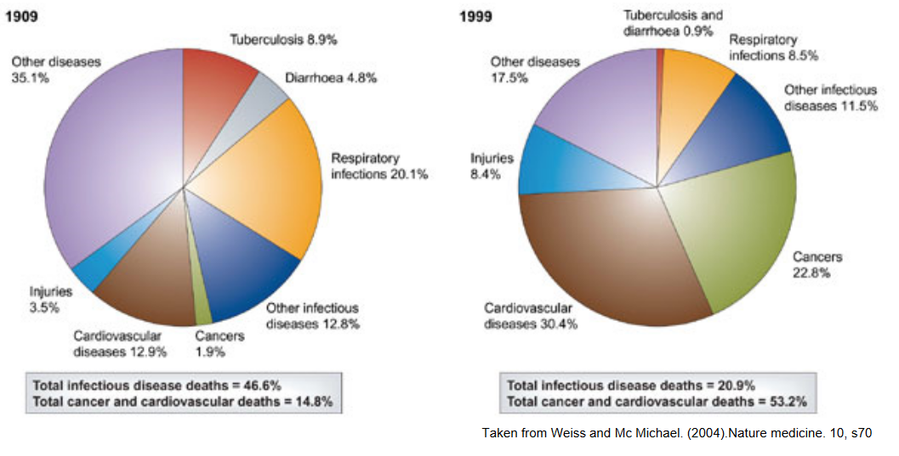
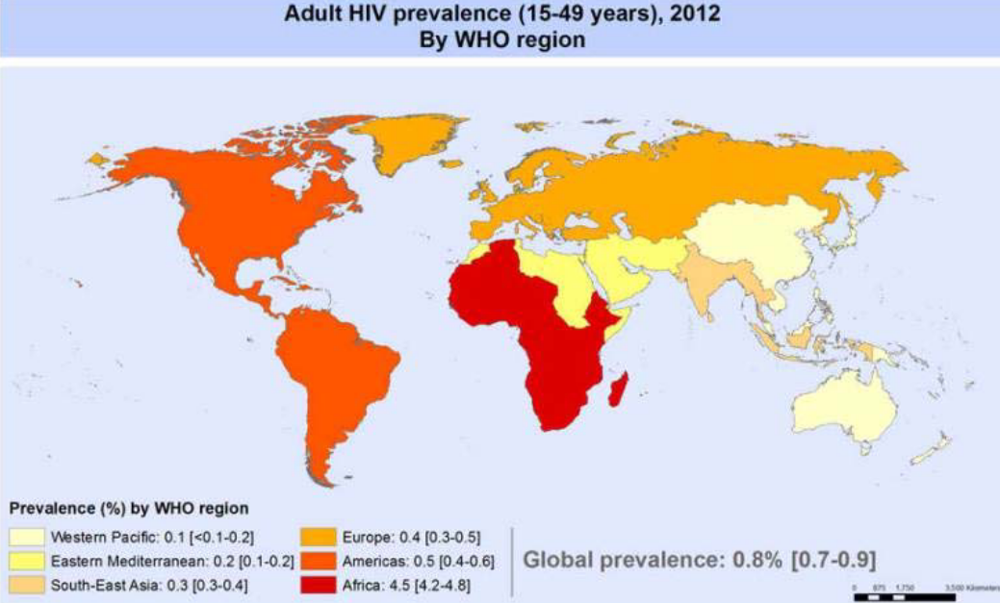
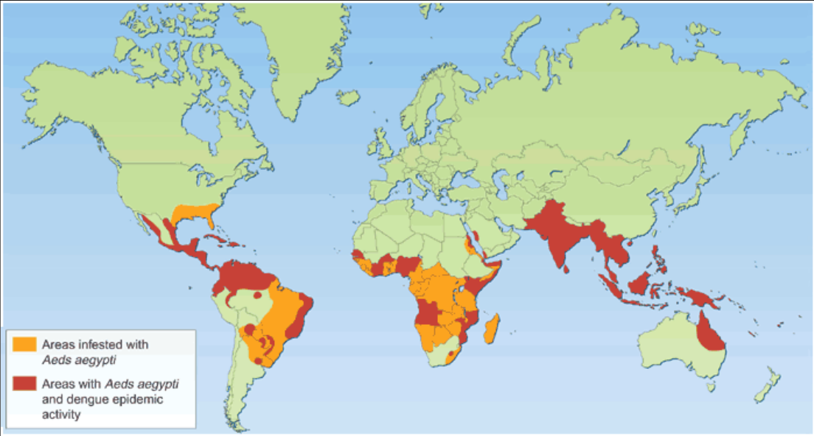
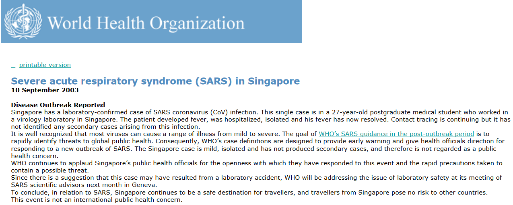
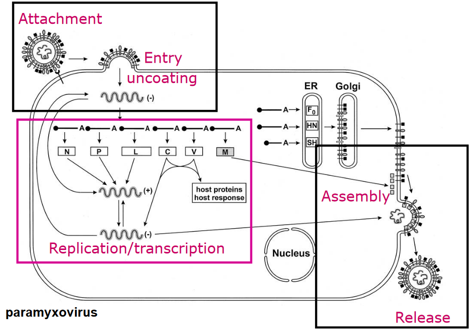
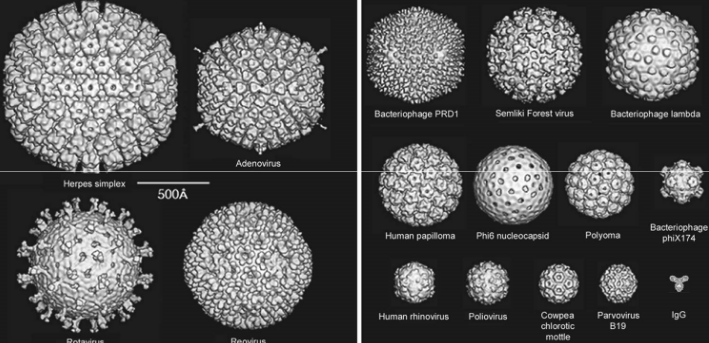
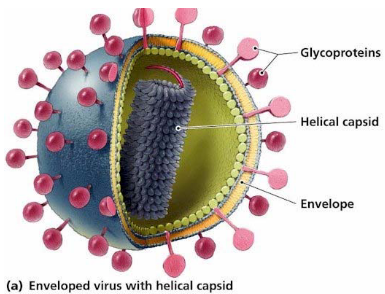
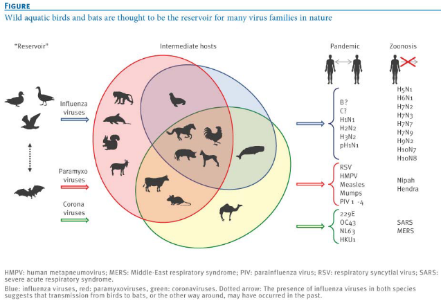
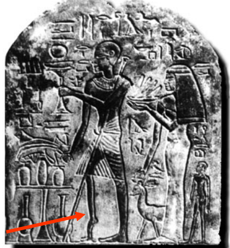
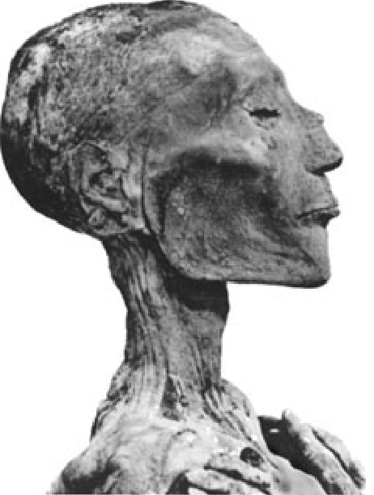

1 A Brief Overview of Virology
The first week’s lecture aims to answer the following questions:
- Why bother studying microbiology and virology?
- What are viruses?
- Where do viruses come from?
- What does the future hold for viruses?
1.1 Why Study Microbiology and Virology?
Infectious diseases cause a lot of death in developing and developed countries.
The above pie chart suggests that although Chile has seen a big drop in national deaths from infectious diseases, the aforementioned is still a big contributor to the total amount of deaths.

Furthermore, some viruses - like HIV - are also found globally.

Even though some viruses are only found in an area, these same viruses can also be spread to other regions of the world via other means (e.g., air travel).

There are also economic effects as a result of viruses and microorganisms. The tourism industry in Singapore took a big hit after its first reported case of SARS.
1.2 What is a Virus?
Viruses were originally said to be tiny objects that can pass through filters (unlike bacteria), but nonetheless, a virus is a tiny particle that has genetic material, a protein shell, and sometimes, a fatty covering.
Viruses can be differerently complex in terms of their genetic or molecular makeup, but their genomes don’t encode for a lot of proteins.
That said, viruses must utilize host cell machinery to survive - they also maintain close contact with cells. So, scientists need to grow viruses in cells to study them. All viruses also follow certain steps (see below) to make copies of themselves - these steps are similar for all viruses.
1.2.1 Stages of Virus Replication

The basic stages (using the paramyxovirus) include:
Attachment and Entry Uncoating
Viruses stick to cells to get in them. They then release their genetic material when they’re inside the cell.
Replication and Transcription
The virus’ genetic material takes over the cell’s machinery to make new genetic material and proteins. This creates more virus parts.
Assembly
The genetic material and proteins form new virus particles.
Release
The virus particles break free from the cell and infect other cells. Everything repeats itself.
1.2.2 Virus Classification
The taxonomic method used to group viruses is polythetic - a virus group is described by its properties. Some properties used to describe viruses include:
Morphology
This refers to the virus’ size, shape, capsid symmetry, and whether it has an envelope or not.

Viruses at Different Sizes How big a virus is affects the way it interacts with its host.
Physical Properties
This refers to the virus’ genome, its response to physical and / or chemical agents, and its antigenic properties.
Biological Properties
This refers to the virus’ replication methods, hosts, transmission modes, and also how infectious it is.
Thoguh, the following metrics can be used as well:
Genetic Material
Viruses can also contain RNA instead of DNA.
Genome Structure
They can be single or multiple-copied, single or double stranded (i.e., “ss” or “ds”), and have various orientations (i.e., +ve like mRNA or -ve sense).
Enveloped or Non-Enveloped Status
Viruses can come with or without lipid envelopes. For those without envelopes, they have a capsid structure and have Icosahedral symmetry (i.e., two, three, and five-fold symmetry).

A Virus with a Lipid Envelope Viruses that have envelopes have something called a lipid bilayer surrounding them. Spike proteins - “little arms” that stick out from the bilayer are usually found too; the arms can help the virus anchor onto surfaces.
1.2.3 Virus Taxonomy
Scientists who study viruses use a system by the International Committee on Taxonomy of Viruses (i.e., ICTV) to organize and name them. The system starts with the biggest group “order” before going down to more specific sub-levels (i.e., “class”, “order”, “family”, etc). There are also special rules for naming and writing descriptions for viruses.
For instance, the human respiratory syncytial virus (i.e., RSV) can be classified using this system as:
- It’s in the “Mononegavirales” order
- It’s in the “Paramyxoviridae” family
- It’s in the “Pneumovirinae” subfamily
- It’s in the “Pneumovirus” genus
- It’s called “Human respiratory syncytial virus” as a species
Scientists also tell viruses apart by looking at their genetic sequences. For instance, there’s a type of RSV called “RSV A2” and another called “RSV Long Isolates”.
1.3 Where Do Viruses Come From?
Scientist think that there are 1031 viruses on the planet; there are also a lot of viruses in the ocean (i.e., about 1.3 \(\times\) 1028 viruses).
Viruses infect about 1023 entities per second in the ocean, and these infections remove about 20% to 40% of oceanic bacteria each day. The amount of bacteria in the human stomach is weighs about a kilogram and the average human adult will poop their own weight in bacteria each year. 8% of viral DNA also comes from what is left of viral genomes.
There are about 1400 types of disease-causing organisms that affect humans, for instance, fungi, bacteria, viruses, and more. Yet, these organisms also make up less than a percent of all the microbes on Earth. Scientists think that there could be 120000 to millions of different microbe species in total and that we’ve only studied an incredibly small portion of DNA on Earth1.
1.3.1 Natural Reservoirs of Human Infection

Viruses can live inside hosts. An infection happens when the virus jumps ship from a host to another person who isn’t infected. The source of virus infections is a significant factor in controlling diseases.
1.4 What Does the Future Hold?

Experts think that the first ever record of a viral infection was in a hieroglyph from Memphis - ancient Egypt’s capital - from about 3700 BCE. In this hieroglyph, Ruma - a temple priest - is showing signs of paralytic poliomyelitis.

There’s also reason to believe that a smallpox outbreak happened in Ancient Egypt, 1157 BC. There’s evidence of smallpox on Ramses V’s mummy.
1.4.1 First Steps to Understanding Viruses
Approaches have been devised in the past to deal with viruses and other infectious diseases:
Variolation
An Ancient Chinese Physician Variolating a Person The ancient Chinese inhaled dried scabs from smallpox survivors while the Turks and the Europeans used pus from a lesion. This was based on the observation that smallpox survivors were immune to subsequent smallpox infections.
Vaccination
Edward Jenner Vaccinating a Young Boy Against Smallpox Edward Jenner noticed that milkmaids who contracted cowpox - a milder variant of smallpox - do not contract smallpox.
So, he suggestd infecting people with cowpox to make someone immune against smallpox. Jenner would then go ahead and infect a young boy with cowpox lesions; he would then go ahead and expose the boy to smallpox a couple of days later.
Although his work was initially met with ridicule, it was eventually met with acceptance.
Further Attempts
Back in 1892, a scientist named Dmitri Iwanowski found that something from sick tobacco plants could make healthy plants sick too. This “something” could pass through filters that catch small things.
Then, in 1898, Freidrich Loeffler and Paul Frosch discovered that a similar tiny thing caused foot-and-mouth disease in cattle. So these things weren’t just affecting plants, they were causing problems in animals too.
Later, in 1908, Karl Landsteiner and Erwin Popper showed that poliomyelitis, a disease that affects the nerves, was also caused by one of these tiny things. This was the first time we realized that viruses could infect not only animals but humans as well.
In 1915, a scientist named Frederick Twort was the first to notice viruses that can infect bacteria
1.4.2 Beginning of Molecular Virology
In 1977, Frederick Sanger and his team figured out the whole order of 5,375 building blocks (nucleotides) in the genome of a virus called bacteriophage fX174. This was a big deal and they even won the Nobel Prize in 1980 for it. This was the very first time anyone had completely figured out the order of all the parts in a living thing’s genome.
Then, in 1983, scientists Luc Montagnier and Robert Gallo made a huge announcement. They found a virus named human immunodeficiency virus (i.e., HIV) which causes AIDS. This happened just two years after AIDS started spreading, so it was a quick discovery.
Effectively meaning that humans have hardly studied the diversity of microbes, including viruses!↩︎